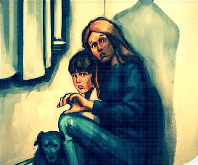

Violencia domestica
¿Que es la violencia domestica?
La violencia familiar es un término utilizado para describir la violencia y el abuso de familiares o una pareja íntima, como un cónyuge, ex cónyuge, novio o novia, ex novio o ex novia, o alguien con quien se tiene una cita. Otros términos utilizados para la violencia familiar incluyen los siguientes:
▪ Maltrato de pareja íntima.
▪ Violencia doméstica.
▪ Maltrato infantil.
▪ Abuso físico.
▪ Violencia en el noviazgo.
▪ Violación marital.
▪ Violación perpetrada por una persona con la que se tiene una cita.
▪ Acoso.
La violencia familiar puede adoptar muchas formas, pero involucra el uso de la intimidación y amenazas o conductas violentas para ejercer poder y control sobre otra persona. En general, la persona abusiva es de sexo masculino y las mujeres a menudo son las víctimas; sin embargo, la violencia familiar también se produce contra los hombres. El maltrato infantil, de personas mayores y de hermanos también se considera violencia familiar.
- Datos sobre la violencia familiar
Los Centros para el Control y Prevención de las Enfermedades (“CDC”, por sus siglas en inglés) ofrece los siguientes datos sobre la violencia familiar y las mujeres:
▪ Alrededor de 4,8 millones de mujeres son víctimas de maltrato de sus parejas íntimas cada año.
▪ La mayor frecuencia de violencia hacia un cónyuge está asociada con un mayor riesgo de que el cónyuge violento también maltrate a los hijos.
▪ Existe una estrecha vinculación entre el acoso y otras formas de violencia: el 81 % de las mujeres acosadas por el esposo o la pareja actual o anterior, también sufrieron agresión física por parte de esa pareja, y el 31 % también sufrió maltrato sexual.
▪ Las consecuencias psicológicas de las víctimas de violencia de parejas íntimas pueden incluir depresión, pensamientos e intentos suicidas, baja autoestima, abuso de alcohol y otras drogas, y trastorno de estrés postraumático.
- fisica:Se refiere a palizas o golpes que causan lesiones físicas que pueden incluir moretones, fractura de huesos, sangrado interno e incluso la muerte. A menudo, el maltrato comienza con contactos leves y con el tiempo empeora para convertirse en acciones más violentas.
- sexual:Suele acompañar o seguir el maltrato físico, y tiene como consecuencia una violación u otra actividad sexual forzada.
- Psicológica o emocional:Una persona que maltrata a menudo lo hace mentalmente o emocionalmente con palabras, amenazas, hostigamiento, posesión extrema, aislamiento forzado y destrucción de pertenencias. El aislamiento a menudo se produce cuando la persona que maltrata intenta controlar el tiempo, las actividades y el contacto con otras personas de la víctima. Las personas que maltratan pueden lograr esto al interferir con las relaciones de apoyo de la víctima, crear barreras para las actividades normales, como sustraer las llaves del coche o encerrar a la víctima en la casa, y mentir y distorsionar la realidad para obtener el control psicológico.
- acoso: Conducta de hostigamiento o amenaza repetida que a menudo deriva en maltrato físico o sexual.
- economica: Esto se da cuando la persona que maltrata controla el acceso a todos los recursos de la víctima, como el tiempo, el transporte, el alimento, la vestimenta,el refugio, el seguro y el dinero. Por ejemplo, puede interferir con la capacidad de la víctima de autoabastecerse e insistir en controlar todas las finanzas de la víctima. Cuando la víctima abandona la relación violenta, el perpetrador puede recurrir al aspecto económico como una manera de mantener el control u obligar a la víctima a regresar.
¿Cuáles son las diferentes formas de violencia familiar?
Las siguientes son formas de violencia familiar y maltrato físico
Dato curioso
Recuerda que los niños, niñas y adolescentes aprenden de las conductas de los adultos, por eso la forma en que estos responden a una crisis tiene impacto en ellos
